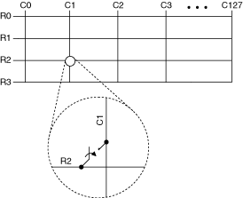
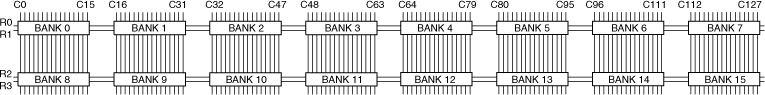
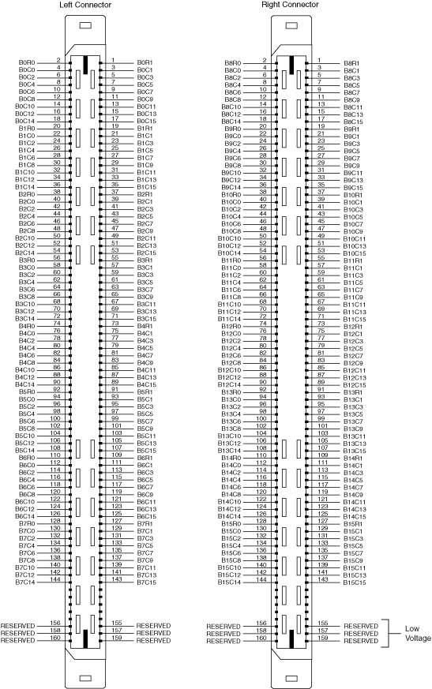
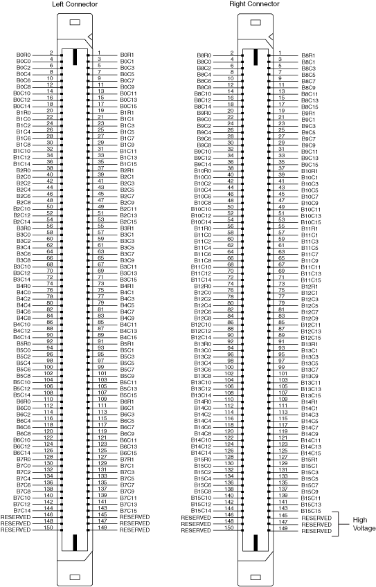

The NI TB-2640 terminal block creates a 1-wire 4×128 matrix topology with the NI PXI/PXIe-2532 (NI 2532). The NI TB-2640B terminal block creates a 1-wire 4×128 matrix topology with the NI PXI/PXIe-2532B (NI 2532B). The following figure represents the NI 2532/2532B in the 1-wire 4×128 matrix topology.

Both the scanning command, r2->c1;, and the immediate operation, niSwitch Connect Channels VI or the niSwitch_Connect function with parameters r2 and c1, result in the following connection:
signal connected to R2 is routed to C1
The NI TB-2640 terminal block connects banks of the NI 2532 to create the 1-wire 4×128 matrix topology. The NI TB-2640B terminal block connects banks of the NI 2532B to create the 1-wire 4×128 matrix topology. The following figure illustrates how the native banks of the NI 2532/2532B connect using the NI TB-2640/2640B to create the 1-wire 4×128 matrix topology.

The following tables list the pin assignments for the NI TB-2640/2640B column ribbon cable headers.
The following table refers to the J3 connector on the upper column connection board of the NI TB-2640 and the J13 connector on the NI TB-2640B.
| Pin Number | Column | Pin Number | Column | Pin Number | Column | Pin Number | Column |
|---|---|---|---|---|---|---|---|
| Pin 1 | C127 | Pin 9 | C119 | Pin 17 | C111 | Pin 25 | C103 |
| Pin 2 | C126 | Pin 10 | C118 | Pin 18 | C110 | Pin 26 | C102 |
| Pin 3 | C125 | Pin 11 | C117 | Pin 19 | C109 | Pin 27 | C101 |
| Pin 4 | C124 | Pin 12 | C116 | Pin 20 | C108 | Pin 28 | C100 |
| Pin 5 | C123 | Pin 13 | C115 | Pin 21 | C107 | Pin 29 | C99 |
| Pin 6 | C122 | Pin 14 | C114 | Pin 22 | C106 | Pin 30 | C98 |
| Pin 7 | C121 | Pin 15 | C113 | Pin 23 | C105 | Pin 31 | C97 |
| Pin 8 | C120 | Pin 16 | C112 | Pin 24 | C104 | Pin 32 | C96 |
The following table refers to the J2 connector on the upper column connection board of the NI TB-2640 and the J12 connector on the NI TB-2640B.
| Pin Number | Column | Pin Number | Column | Pin Number | Column | Pin Number | Column |
|---|---|---|---|---|---|---|---|
| Pin 1 | C95 | Pin 9 | C87 | Pin 17 | C79 | Pin 25 | C71 |
| Pin 2 | C94 | Pin 10 | C86 | Pin 18 | C78 | Pin 26 | C70 |
| Pin 3 | C93 | Pin 11 | C85 | Pin 19 | C77 | Pin 27 | C69 |
| Pin 4 | C92 | Pin 12 | C84 | Pin 20 | C76 | Pin 28 | C68 |
| Pin 5 | C91 | Pin 13 | C83 | Pin 21 | C75 | Pin 29 | C67 |
| Pin 6 | C90 | Pin 14 | C82 | Pin 22 | C74 | Pin 30 | C66 |
| Pin 7 | C89 | Pin 15 | C81 | Pin 23 | C73 | Pin 31 | C65 |
| Pin 8 | C88 | Pin 16 | C80 | Pin 24 | C72 | Pin 32 | C64 |
The following table refers to the J3 connector on the lower column connection board of the NI TB-2640 and the J3 connector on the NI TB-2640B.
| Pin Number | Column | Pin Number | Column | Pin Number | Column | Pin Number | Column |
|---|---|---|---|---|---|---|---|
| Pin 1 | C0 | Pin 9 | C8 | Pin 17 | C16 | Pin 25 | C24 |
| Pin 2 | C1 | Pin 10 | C9 | Pin 18 | C17 | Pin 26 | C25 |
| Pin 3 | C2 | Pin 11 | C10 | Pin 19 | C18 | Pin 27 | C26 |
| Pin 4 | C3 | Pin 12 | C11 | Pin 20 | C19 | Pin 28 | C27 |
| Pin 5 | C4 | Pin 13 | C12 | Pin 21 | C20 | Pin 29 | C28 |
| Pin 6 | C5 | Pin 14 | C13 | Pin 22 | C21 | Pin 30 | C29 |
| Pin 7 | C6 | Pin 15 | C14 | Pin 23 | C22 | Pin 31 | C30 |
| Pin 8 | C7 | Pin 16 | C15 | Pin 24 | C23 | Pin 32 | C31 |
The following table refers to the J2 connector on the lower column connection board of the NI TB-2640 and the J2 connector on the NI TB-2640B.
| Pin Number | Column | Pin Number | Column | Pin Number | Column | Pin Number | Column |
|---|---|---|---|---|---|---|---|
| Pin 1 | C32 | Pin 9 | C40 | Pin 17 | C48 | Pin 25 | C56 |
| Pin 2 | C33 | Pin 10 | C41 | Pin 18 | C49 | Pin 26 | C57 |
| Pin 3 | C34 | Pin 11 | C42 | Pin 19 | C50 | Pin 27 | C58 |
| Pin 4 | C35 | Pin 12 | C43 | Pin 20 | C51 | Pin 28 | C59 |
| Pin 5 | C36 | Pin 13 | C44 | Pin 21 | C52 | Pin 29 | C60 |
| Pin 6 | C37 | Pin 14 | C45 | Pin 22 | C53 | Pin 30 | C61 |
| Pin 7 | C38 | Pin 15 | C46 | Pin 23 | C54 | Pin 31 | C62 |
| Pin 8 | C39 | Pin 16 | C47 | Pin 24 | C55 | Pin 32 | C63 |
The NI TB-2640 and NI TB-2640B provide two ribbon cable headers for row connection. Use one cable header to connect to your application. Use the other cable header for column expansion.
The following table lists the pin assignments for row connection.
| Pin Number | Row |
|---|---|
| 1 | RO |
| 2 | R1 |
| 3 | R2 |
| 4 | R3 |
| 5–16 | — |
Each row signal is isolated from the reed relays through a 100 Ω resistor. To bypass this resistor, install a jumper on the appropriate pins of the header indicated in the table below. The following table lists the appropriate jumper position for bypassing the resistor on each row signal.
| Bypassed Row | NI TB-2640 Module Interface Board | NI TB-2640B | ||
|---|---|---|---|---|
| Header | Pins Connected | Header | Pins Connected | |
| R0 | J5 | 1-2 | J14 | 1-2 |
| R1 | J5 | 5-6 | J14 | 3-4 |
| R2 | J5 | 9-10 | J14 | 5-6 |
| R3 | J5 | 13-14 | J14 | 7-8 |
The following figure identifies the pins for the NI 2532.

|
Caution Do not connect to RESERVED pins. Keep low-voltage pins isolated from row and column channels when high voltage is present. |
The following figure identifies the pins for the NI 2532B.

|
Caution Do not connect to RESERVED pins. |